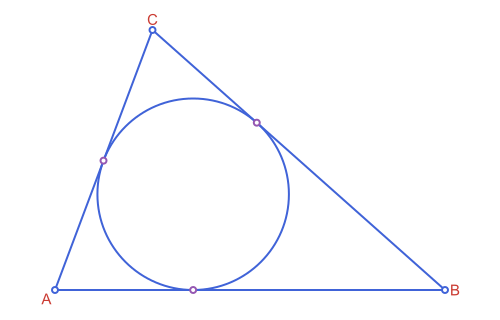

Workflow: From Construction to Figure
Most of the package is geometry, and drawing is the last step. A figure that is easy to change comes from doing the steps in a fixed order, because each step has one rule that the next step depends on. This page walks through the order once, with a single example, and ends with the mistakes that come from breaking it.
| Step | Where it happens | What you do | Main tools |
|---|---|---|---|
| 1. Construct | core | build the objects in your own coordinates | constructors, intersection, projection |
| 2. Measure and check | core | confirm the numbers before drawing anything | area, distance, measure |
| 3. Fit the canvas | core | scale and flip everything at once | @prepare_to_picture |
| 4. Decorate | core | compute marks, arrows, braces and label positions on the fitted objects | marks, arrow_head, label_anchor |
| 5. Draw | Luxor extension | put colors, widths and text on top | path |
Steps 1 to 4 need no drawing library at all. Only step 5 loads Luxor, so everything before it can be tested, and the figure never disagrees with the numbers behind it.
1. Construct
Build the objects in the coordinates of the problem, not of the screen. The example for the whole page is a triangle, its incircle and the three points where the incircle touches the sides:
using Apollonius
A, B, C = APPoint(0.0, 0.0), APPoint(6.0, 0.0), APPoint(1.5, 4.0)
t = APTriangle(A, B, C)
inc = incircle(t)
ct = contact_triangle(t) # its vertices are the touch points, opposite A, B and CAPTriangle([3.1042390484786235, 2.574009734685668], [0.7463487920857574, 1.9902634455620198], [2.1256022916313086, 0.0])
See script
using Apollonius, Luxor
import Luxor: julia_red, julia_blue, julia_green, julia_purple
lxm = @prepare_to_picture! width=500 height=320 margin=30 begin
A, B, C = APPoint(0.0, 0.0), APPoint(6.0, 0.0), APPoint(1.5, 4.0)
t = APTriangle(A, B, C)
inc = incircle(t)
ct = contact_triangle(t)
end
begin
Drawing(lxm.width, lxm.height, :svg)
origin(); fontsize(15)
sethue(julia_blue)
path([t, inc], action=:stroke)
sethue(julia_red)
for (n, v) in zip(("A", "B", "C"), (A, B, C))
label(n, label_anchor(v, centroid(t))..., offset=8)
end
sethue("white")
path([A, B, C], action=:fillpreserve)
sethue(julia_blue); strokepath()
sethue("white")
path(vertices(ct), action=:fillpreserve)
sethue(julia_purple); strokepath()
finish()
preview()
endKeep the origin and the units that make the problem simple. Nothing here depends on how big the figure will be.
2. Measure and check
A wrong figure is usually a wrong construction, so verify it before drawing. Compare a result with an independent formula, and test the relationships the figure is supposed to show:
area(t) ≈ inradius(t) * perimeter(t) / 2 # area = r * semiperimeter
touch = collect(vertices(ct))
all(p -> distance(p, inc.center) ≈ inc.r, touch) # the touch points lie on the incircletrueThe two tangent segments from a vertex are equal, which is what the marks will say. Check it now, in numbers:
distance(A, touch[3]) ≈ distance(A, touch[2])true3. Fit the canvas
@prepare_to_picture scales, centers and flips a whole set of objects so they fit a canvas of a given width. It returns two NamedTuples, called lxm (the "Luxor meta": canvas size, fitting function, drawable area) and lxo (the "Luxor objects": the fitted objects, under the names they have in the block):
lxm, lxo = @prepare_to_picture width=500 margin=30 begin
t
inc
ct
end
lxm.width, lxm.height(500.0, 353.3333333333333)From here on, work with lxo.t, lxo.inc and lxo.ct. They are the same objects in canvas coordinates: y grows downward and one unit is one drawing unit. The originals are untouched, so the same objects can be fitted again in another figure. The two rules for this step are on the Conventions & FAQ page.
4. Decorate
Marks, arrows and braces have a size, and the size is in the units of the objects you give them. Give them the fitted objects and the size is in drawing units, which is what a mark on the screen needs. Give them the original triangle and the default mark, 6 units long, is bigger than the side it decorates:
raw_tick = only(marks(APSegment(A, touch[3])))
distance(raw_tick.p1, raw_tick.p2), distance(A, touch[3]) # a tick 6.0 long on a side 2.1 long(6.0, 2.1256022916313086)On the fitted objects the same call gives a small tick. The equal tangent segments from each vertex get one, two and three ticks:
touch2 = collect(vertices(lxo.ct))
A2, B2, C2 = vertices(lxo.t)
pieces = [(A2, touch2[3], 1), (A2, touch2[2], 1), (B2, touch2[3], 2), (B2, touch2[1], 2),
(C2, touch2[1], 3), (C2, touch2[2], 3)]
ticks = [marks(APSegment(p, q); count=k) for (p, q, k) in pieces]
length.(ticks)6-element Vector{Int64}:
1
1
2
2
3
3The result of every decoration function is a Vector of ordinary objects, so it goes straight to path. Label positions follow the same idea. label_anchor returns the alignment and the point together, and placing a vertex label away from the centroid keeps it outside the triangle:
G2 = centroid(lxo.t)
[label_anchor(v, G2).alignment for v in (A2, B2, C2)]3-element Vector{Symbol}:
:SW
:E
:N
See script
using Apollonius, Luxor
import Luxor: julia_red, julia_blue, julia_green, julia_purple
lxm = @prepare_to_picture! width=500 height=320 margin=30 begin
A, B, C = APPoint(0.0, 0.0), APPoint(6.0, 0.0), APPoint(1.5, 4.0)
t = APTriangle(A, B, C)
inc = incircle(t)
ct = contact_triangle(t)
end
begin
Drawing(lxm.width, lxm.height, :svg)
origin(); fontsize(15)
tp = collect(vertices(ct))
pieces = [(A, tp[3], 1), (A, tp[2], 1), (B, tp[3], 2), (B, tp[1], 2), (C, tp[1], 3), (C, tp[2], 3)]
sethue(julia_blue)
path([t, inc], action=:stroke)
sethue(julia_purple)
for (p, q, k) in pieces
path(marks(APSegment(p, q); count=k), action=:stroke)
end
sethue(julia_red)
for (n, v) in zip(("A", "B", "C"), (A, B, C))
label(n, label_anchor(v, centroid(t))..., offset=8)
end
sethue("white")
path([A, B, C], action=:fillpreserve)
sethue(julia_blue); strokepath()
sethue("white")
path(vertices(ct), action=:fillpreserve)
sethue(julia_purple); strokepath()
finish()
preview()
endThe alignment is read as drawn, with y downward, so :N is above the point on the screen. Each label points away from the centroid: A is at the lower left, so its label goes :SW, and C is at the top, so its label goes :N.
5. Draw
Only now does Luxor appear. The block below is not run by this documentation, because it needs Luxor loaded, but every object in it comes from the steps above. Colors, line widths and text are yours; the package never chooses them:
using Apollonius, Luxor
@svg begin
setline(1.5)
sethue("steelblue")
path(lxo.t; action=:stroke)
path(lxo.inc; action=:stroke)
sethue("crimson")
for ts in ticks
path(ts; action=:stroke) # one call draws all the ticks of a segment
end
sethue("black")
for (v, name) in zip((A2, B2, C2), ("A", "B", "C"))
label(name, label_anchor(v, G2)...) # splat: (alignment, point)
end
end lxm.width lxm.heightpath takes a single object, a Vector of them, or a Vector mixing several kinds. See Drawing with Luxor.jl for what it draws for each type, and Marks, Labels & Decorations for every decoration function.
What goes wrong, and why
| Symptom | Cause | Fix |
|---|---|---|
| Marks or arrows are far too big or too small | they were computed on the original objects, not the fitted ones | fit first, then decorate |
| A label falls inside the figure instead of outside | side or the compass direction read as if y were upward | those functions read coordinates as drawn: y downward |
NaN in the canvas size | an infinite object (an APLine, a parabola) in the fitted block | put two points in the block and build the line after fitting, or use @unbounded |
| An arc runs the other way, or an arrow points to the wrong end | fitting flips y, so a counterclockwise arc is stored with its endpoints swapped | compute decorations on the fitted arc: they follow what you see |
| A grid or axes are not where the origin is | grid_lines anchors its lines at the origin of the coordinates it receives | build them inside the fitted block, in your own coordinates |
| Objects change unexpectedly between two figures | @prepare_to_picture! replaced the variables | use the version without !, which leaves the originals alone and returns the fitted ones in lxo |
| A construction shows only its result | the shown constructions return the compass traces separately | use the arcs and points of the returned NamedTuple; see Compass & Ruler Constructions |
A short checklist
- Are the objects built in the coordinates of the problem?
- Did a number check the construction before any drawing?
- Was the fit done once, for all the objects that appear together?
- Are all decorations computed on the fitted objects?
- Does the drawing block only choose colors, widths and text?
When a figure looks wrong, check step 2 first. If the numbers are right, the fault is in the fitting, the decorations or the drawing, in that order.